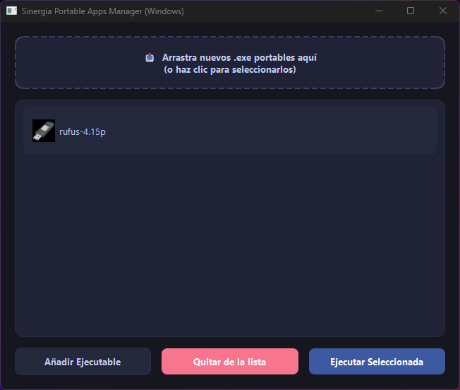

⚡ Interfaz Moderna
Desarrollada con PyQt6 bajo un entorno visual oscuro, limpio y adaptado a Windows.
📂 Arrastrar y Soltar
Añade nuevos ejecutables portátiles con total comodidad arrastrándolos directamente a la ventana.
🔓 Código Abierto
Bajo la licencia estricta GNU GPL v3, garantizando total transparencia y libertad para la comunidad.